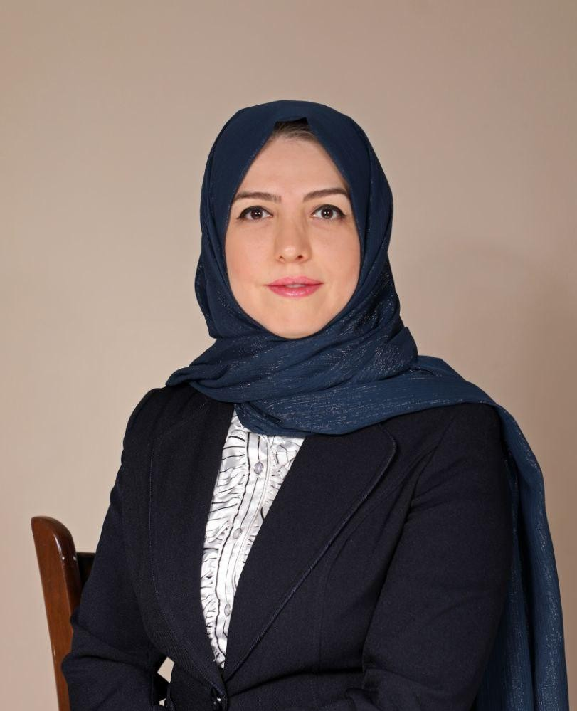
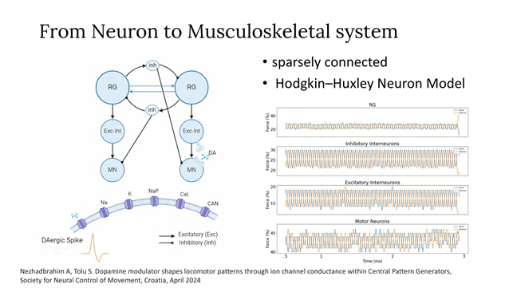
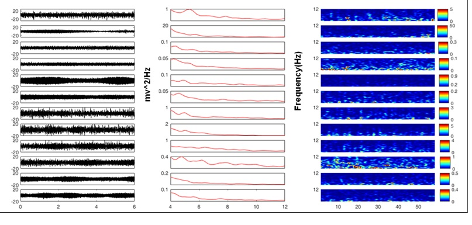
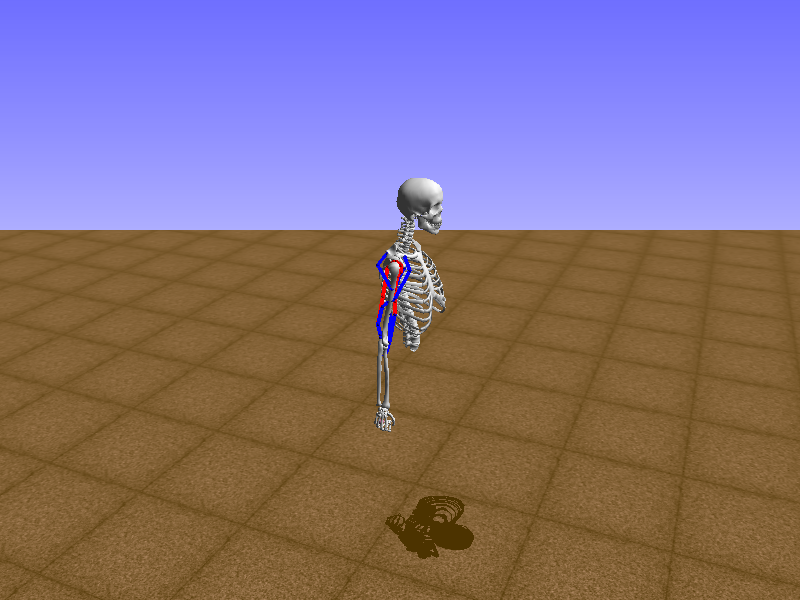

Atiyeh Nezhadebrahim
Hello! I am an interdisciplinary researcher working at the intersection of computational neuroscience, biomechanics, and neurorobotics. My work focuses on understanding how the nervous system orchestrates movement — and translating that understanding into computational models of neural circuits and neuromusculoskeletal systems.
I hold two master's degrees — in Animal Biology (Physiology) from Shahed University and in Mechanical Engineering from K.N. Toosi University of Technology — which together give me an unusual vantage point on how biology and engineering meet in motor control. I have worked at the Max Planck Institute for Intelligent Systems in Stuttgart, the Denmark Technical University in Copenhagen, and multiple neuroscience research centers in Tehran.
I am currently based in Stuttgart, Germany, and am looking for PhD and research opportunities in neurorobotics and computational neuroscience. Feel free to reach out — I am always happy to discuss research, ideas, or potential collaborations.

Research Interests
I am broadly interested in how the nervous system generates and controls movement, with a focus on computational modeling of neural circuits — particularly Central Pattern Generators (CPGs) — and their integration with musculoskeletal models. I find it fascinating how relatively simple spinal circuits, modulated by descending signals and sensory feedback, can produce the rich repertoire of rhythmic and goal-directed movements we observe in animals and humans.
My work uses spiking neural network models (NEST Simulator) coupled with biomechanical simulations (OpenSim) to study how neuromodulation — especially dopaminergic pathways — shapes motor output. This has led me into questions about pathological motor control, including how disruptions to these circuits produce the motor symptoms of Parkinson's disease.
More recently, I have been drawn to questions of sensorimotor integration during reaching and locomotion, combining electrophysiological recording techniques (LFP, EMG) with motion capture and force plate measurements to bridge computational models and experimental data. I see computational neurorobotics as a powerful language for connecting neuroscience and engineering — and I want to push that bridge further.
News
Research Highlights

Neurorobotics · CPG Modelling
Biophysical Model of Central Pattern Generators with Ion Channel-Dependent Rhythm Modulation
A biophysical computational model of spinal cord Central Pattern Generators capable of producing rhythmic movement. The model demonstrates how locomotor rhythm frequency can be modulated by altering the conductance properties of ion channels — linking cellular biophysics directly to emergent motor patterns. Dopaminergic neuromodulation was investigated as a key regulator of this frequency-tuning mechanism. Presented at the Society for Neural Control of Movement (Croatia, 2024).

Computational Neuroscience · Motor Pathology
Parkinson's Disease Neuromodulation Model
Neuromusculoskeletal model linking spinal circuit dynamics to the observable motor symptoms of Parkinson's disease — connecting CPG-level disruptions to limb-level movement pathology. Developed in collaboration with DTU's Neurorobotic Technology Lab.

Electrophysiology · Animal Models
Seizure Model & LFP Electrophysiology
Rat model of motor seizures via intrastriatal colchicine injection. Performed intracranial electrode implantation, recorded Local Field Potentials (LFPs), and applied signal processing to analyze electrophysiological dynamics of seizure activity. This work led to two published papers.

Biomechanics · Human Locomotion
Neuromusculoskeletal Reaching Model
Developing a neuromusculoskeletal model of reaching by connecting a Spiking Neural Network model of CPGs with an arm model, investigating how neural activity and sensory feedback shape goal-directed upper-limb movement. Ongoing at Iran University of Medical Sciences.
Publications
Journal Papers
Conference Abstracts & Papers